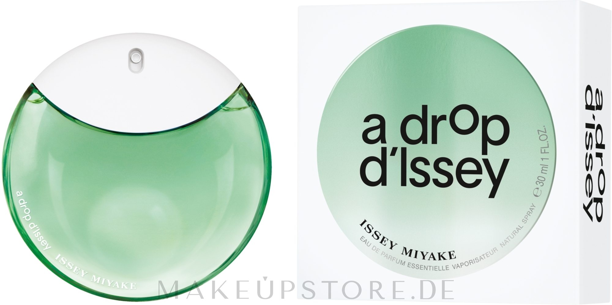
Issey Miyake A Drop D'Issey Essentielle
Помню только детский восторг. Хочу вспомнить почему.
Вещи, впечатления и маленькие радости, для которых всегда найдётся место.

Помню только детский восторг. Хочу вспомнить почему.
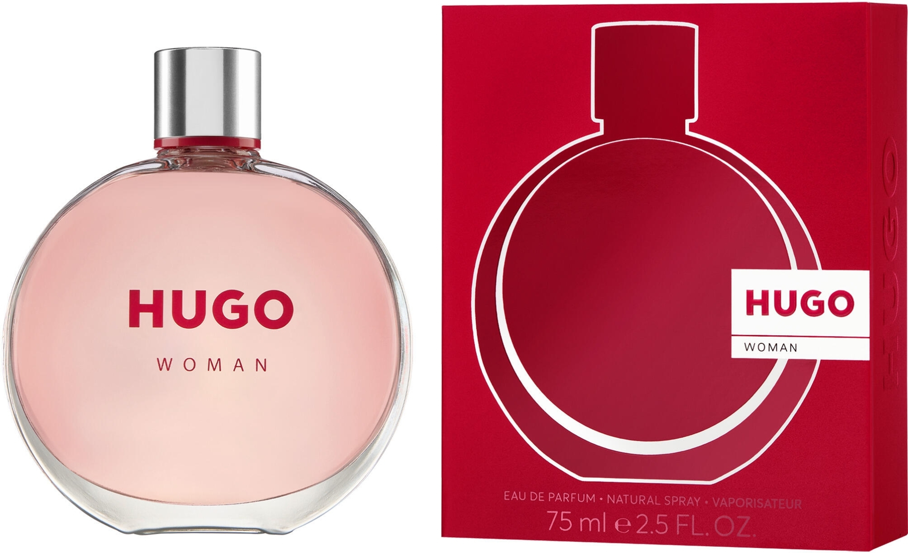
Когда-то казался мне чем-то невероятно прекрасным.
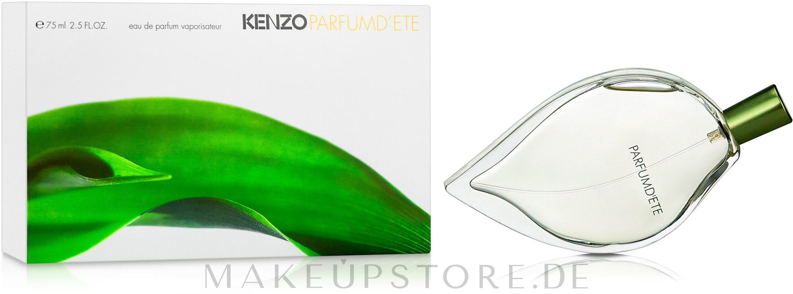
Запах из прошлого, который очень хочется встретить снова.
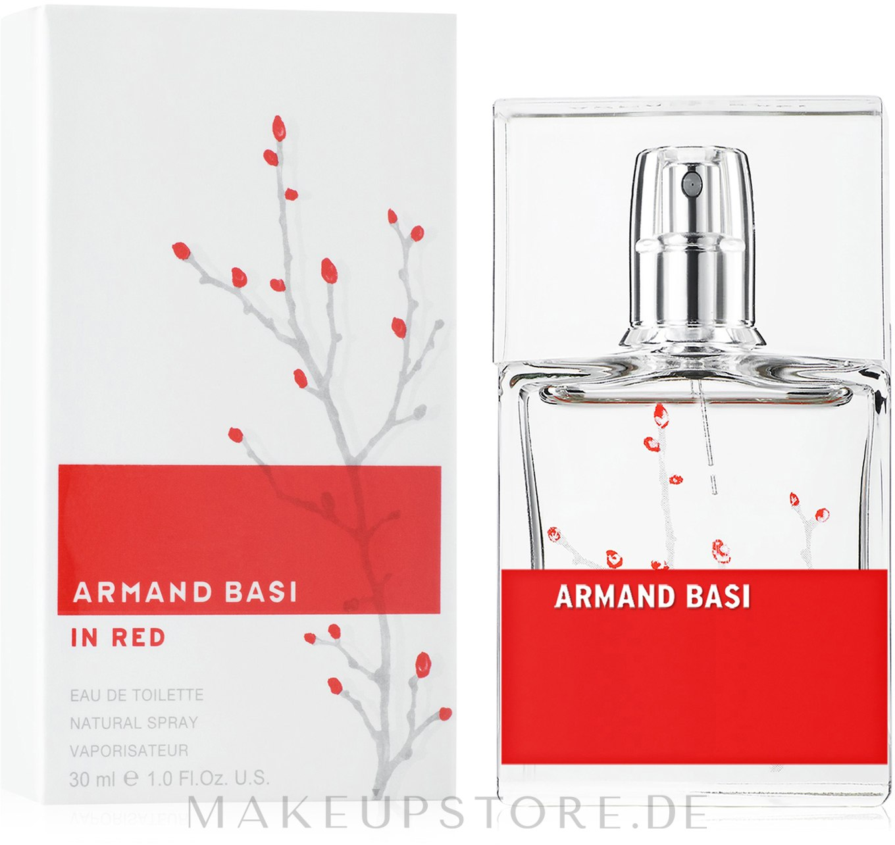
Помню восторг, но почти не помню запах. Пора исправить.

Маленькая парфюмерная машина времени.

В детстве такая косметика казалась недоступной роскошью.
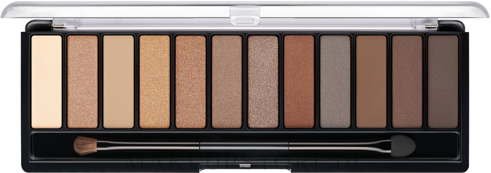
Та самая недоступная косметическая магия из детства.
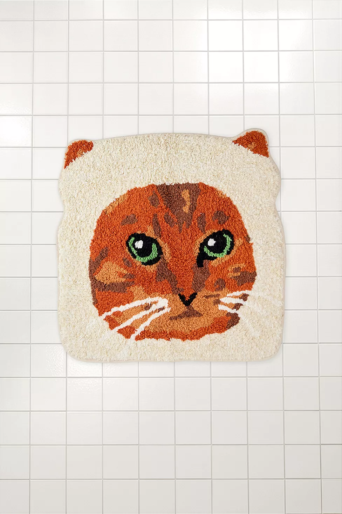
Слишком милый кот-хлеб, чтобы жить без него.
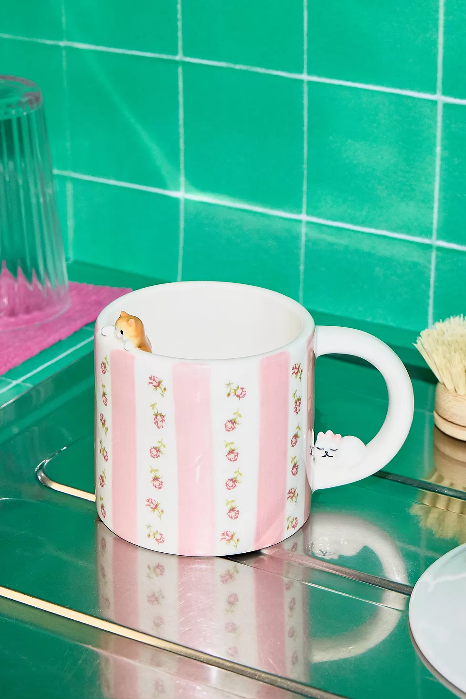
Маленькая кошачья чашка для ежедневной радости.

Маленький бьюти-эксперимент, который давно хочется попробовать.
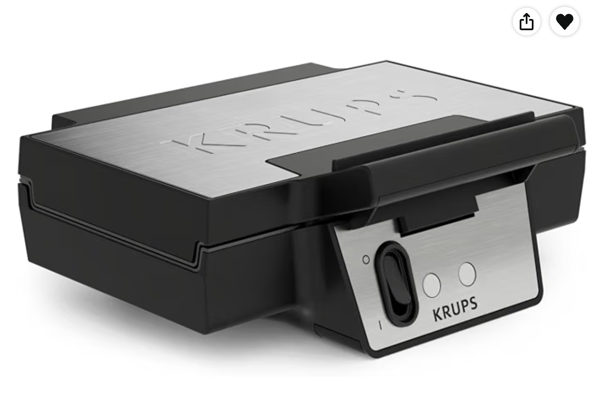
Чтобы дома иногда случались очень серьёзные вафли.

Хороший маленький микрофон для голоса, музыки и всяких идей.
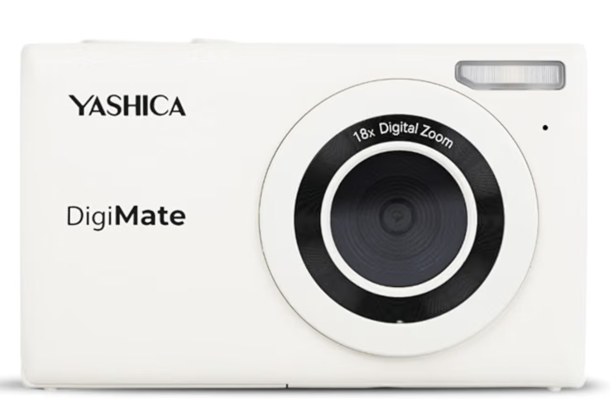
Маленькая камера просто ради удовольствия снимать.

Чтобы иногда превращать совместный быт в маленький хаос.
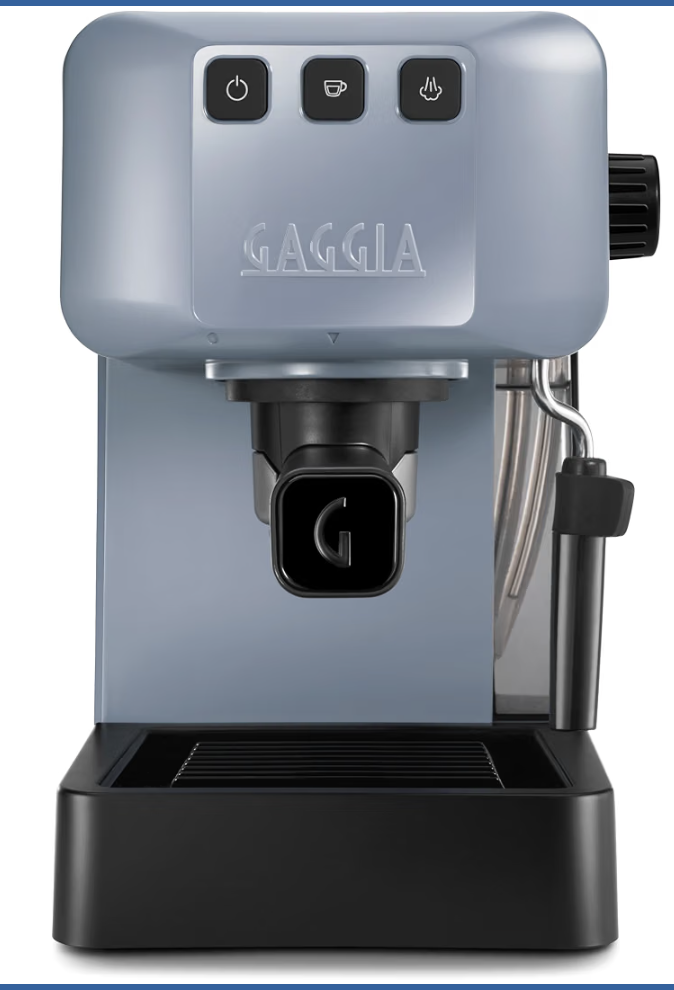
Чтобы дома был настоящий эспрессо и чуть больше Италии.

Потому что кофе иногда хочется делать слишком серьёзно.
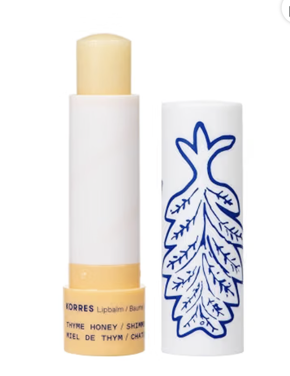
Медовый блеск для губ — маленькая ежедневная радость.
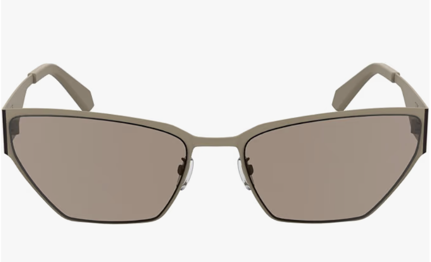
Розовые очки. Иногда это буквально правильный аксессуар.